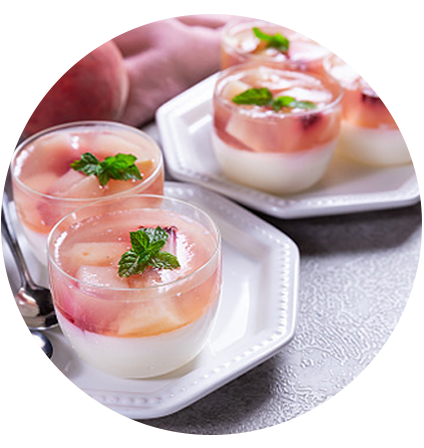
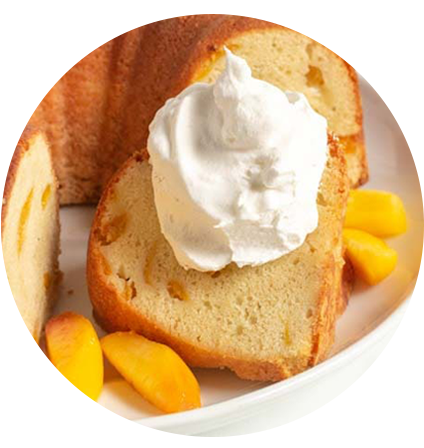
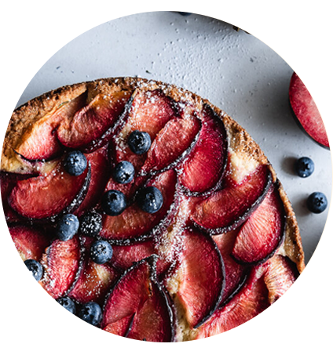
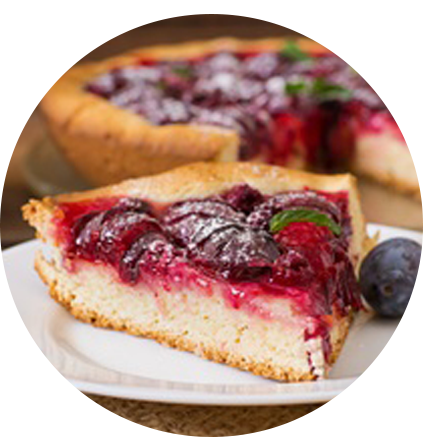
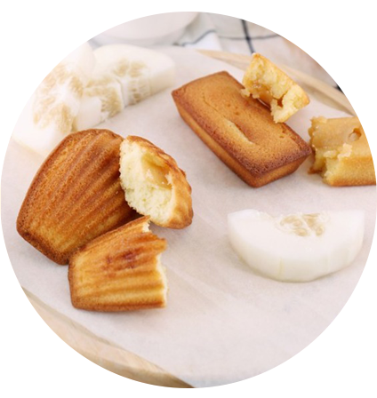
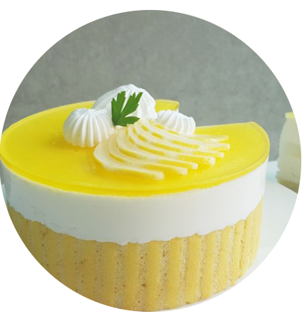

봄
여름
가을
늦가을
Summer menu
복숭아, 자두 , 참외
분홍빛의 달콤함 복숭아!
복숭아는 5월~6월까지만 나옵니다.
복숭아 판나코타
재료 복숭아,판젤라틴,우유,생크림,바닐라 익스트렉
우유로 만들어 부드러운 푸딩 위에
달달한 복숭아가 퐁당


복숭아 파운드케이크
재료 복숭아, 버터, 크림치즈, 설탕, 소금, 계란,
바닐라 익스트렉, 박력분
꾸덕한 파운드케잌에 절여진 복숭아로 촉촉하게
새콤 그 자체! 자두
자두는 7월~8월까지만 나옵니다.
자두 케이크
재료 자두, 중력분, 생크림, 설탕, 버터, 소금, 계란
달콤 새콤 자두와 고소한 생크림이 만나서
찰떡 궁합을 보이는 맛


자두 타르트
재료 재료
자두, 박력분, 설탕, 버터, 소금, 계란, 우유
과육이 많은 자두와 바삭한 타르트에 찰떡 궁합
달콤하고 시원한 맛의 참외!
참외는 6월~8월까지만 나옵니다.
참외 마들렌
재료 참외, 버터, 중력분, 계란, 설탕
참외를 직접 갈아 만들어 만든 마들렌입니다.
보통 마들렌보다 풍미가 깊고 촉촉한것이 특징


참외 무스케이크
재료 젤라틴, 참외, 버터, 박력분, 설탕, 레몬즙, 마스카포네치즈
마스카포네치즈로 참외의 상큼한 맛을 더하고
달고 아삭한 참외의 식감을 살린것이 특징